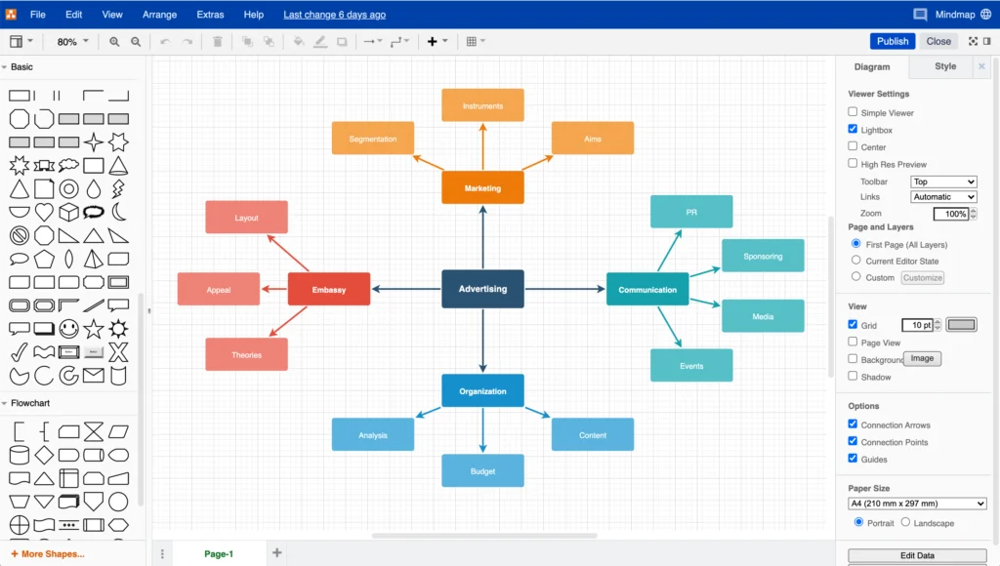

Minust
Tere! Olen Roman, esimese aasta IT-tudeng, kes on kirglik tarkvaradisaini ja veebiarenduse vastu. Mulle meeldib luua puhtaid liideseid ja visualiseerida süsteemiarhitektuure. Minu lemmiksosa arendusprotsessis on planeerimine ja diagrammide koostamine — just sellepärast armastan CASE tööriistu.
← Tagasi avaleheleMinu lemmik CASE tööriist: Draw.io
Tasuta ja võimas diagrammide koostamise tööriist
Ajalugu
Draw.io (ametlikult diagrams.net) lõi algselt JGraph Ltd, Ühendkuningriigi tarkvarafirma, umbes 2005. aastal. Alguses oli see tasuline toode, kuid hiljem muudeti see täiesti tasuta ja avatud lähtekoodiga, et muuta professionaalne diagrammide koostamine kättesaadavaks kõigile — tudengitele, arendajatele ja meeskondadele. Projekt on aktiivselt arendamisel ning lähtekood on saadaval GitHubis.
Põhifunktsioonid
- UML, vooskeemid, ERD, võrgudiagrammid jpm
- Töötab otse brauseris — paigaldust pole vaja
- Võrguühenduseta töölauarakendus Windowsile, macOS-ile ja Linuxile
- Integratsioon Google Drive, Confluence, Notion ja VS Code'iga
- Ekspordi PNG, SVG, PDF või XML formaati
- Reaalajas koostöö tugi
- 100% tasuta ja avatud lähtekoodiga
Ekraanipilt
